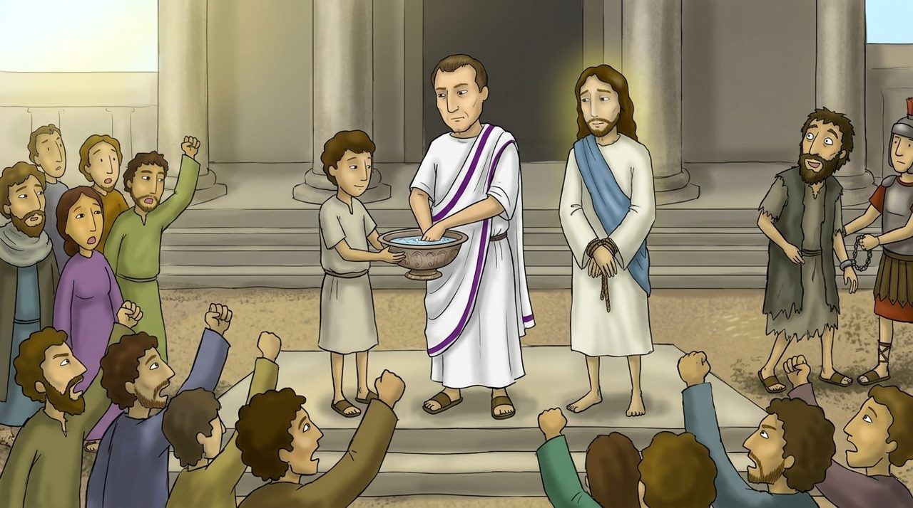

1 · 27:1–26
바라바 대신
유다는 예수님이 정죄되는 것을 보고 후회하며 은 삼십을 돌려주었어요. 대제사장들은 그 ‘피 값’으로 토기장이의 밭을 샀어요. 한편 로마 총독 는 “네가 유대인의 왕이냐” 물었고, 예수님은 “네 말이 옳도다” 하신 뒤 침묵하셨어요.
빌라도의 아내조차 “저 옳은 사람에게 아무 상관도 하지 마소서” 했어요. 그러나 무리는 “바라바!”를 외쳤어요. ‘바라바’는 ‘아버지의 아들’이라는 뜻이에요. 죄 있는 ‘아버지의 아들’이 풀려나고 죄 없는 ‘아버지의 아들’이 죽으셨어요.
깊이 보기 · 손을 씻은 빌라도
빌라도는 물로 손을 씻으며 “이 사람의 피에 대하여 나는 무죄하니 너희가 당하라” 했어요. 하지만 책임은 씻겨 나가지 않아요. 사도신경은 지금도 “본디오 빌라도에게 고난을 받으사”라고 고백해요.